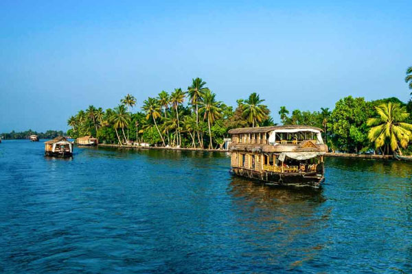
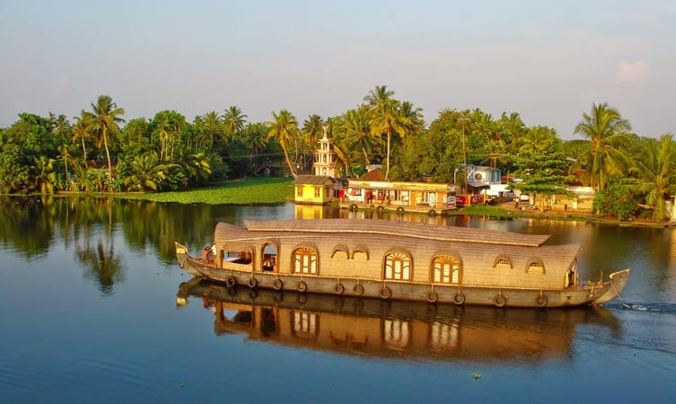
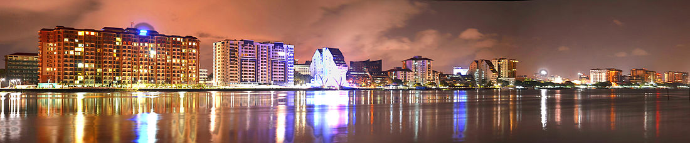
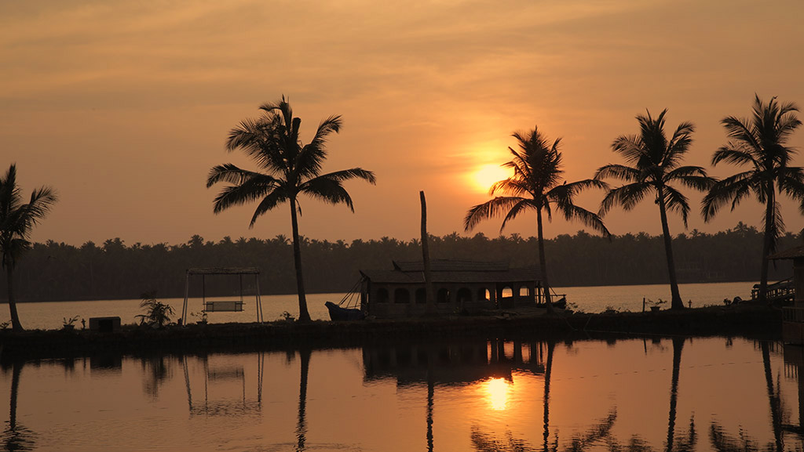
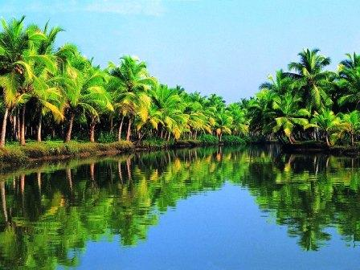

No Kerala trip can end without exploring the backwaters. The lush palm-fringed scenery, varied wildlife, and backwater-line houses and villages make a houseboat cruise feel like a journey into another country. It is, for sure, a peaceful pursuit that can be part of a memorable romantic getaway. To immerse yourself in the community surrounding these inland lagoons, lakes, and waterways, book a hotel or homestay along the road.
5 Most Offbeat Kerala Backwaters You Should Explore
- Pathiramanal Backwaters

- Vembanad Lake, Kumarakom

- Marine Drive, Kochi

- Padanna Backwaters, Kasaragod

- Thiruvallam Backwaters in Thiruvananthapuram
